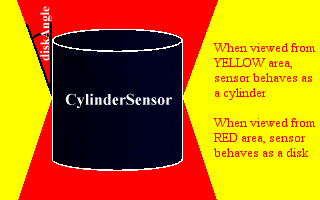

| Es Rudo Al Punto |
En este capítulo, vamos a cubrir los cuatro nodos sensores restantes que pueden usarse para obtener entradas de datos del usuario. Estos sensores detectan pulsaciones de ratón, operaciones de arrastrar y soltar, y otras similares. Puedes usarlos para mover objetos, comenzar animaciones, y otras muchas cosas. Una vez que hayamos acabado con esto, veremos los interpoladores, y veremos alguna animación real.
TouchSensor
Vale, el primer sensor que vamos a ver en este capítulo es el TouchSensor. Detecta la interacción del ratón sobre un objeto que se encuentre a la misma altura jerarquica en el anidamiento de nodos (que formen parte de un mismo group) y los nodos que a su vez se encuentren por debajo de estos (si este nodo es un Group, por ejemplo). A esto le llamaremos geometría hermana, de ahora en adelante. Cuando el ratón se queda encima del objeto, se genera un evento isOver TRUE, y cuando se retira, se envía isOver FALSE. Cuando se pulsa cualquiera de los botones del ratón mientras el puntero del ratón esté sobre el objeto (isOver será TRUE también, necesariamente) se lanza un evento isActive TRUE, y al soltar el botón, se envia un isActive FALSE. El eventOut touchTime se envía cuando un botón se aprieta y se suelta sobre el objeto. Si el cursor está fuera del objeto mientras el botón se suelta, el evento no se envía. Si es enviado, el evento toma el valor del momento en que se dejó de apretar el botón.
TouchSensor {
exposedField SFBool enabled TRUE
eventOut SFVec3f hitNormal_changed
eventOut SFVec3f hitPoint_changed
eventOut SFVec2f hitTexCoord_changed
eventOut SFBool isActive
eventOut SFBool isOver
eventOut SFTime touchTime
}Mientras isOver devuelva TRUE, los otros tres eventos se generarán siempre que se produzca un cambio de valor en sus campos respectivos. hitNormal_changed envía la normal de la superficie que recibe la pulsación, y hitPoint_changed envía la posición de la pulsación. el hitTexCoord_changed envía la coordenada de la textura, de haberla, en que se produce la pulsación, y podría usarse junto con un script para hacer un mapa sensible virtual sobre la superficie de un objeto. Por ejemplo, imagina un teclado virtual, y una caja con una textura de teclado. En lugar de un TouchSensor aparte (con formas geométricas separadas) para cada tecla, podrías tener un TouchSensor dirigido a un script para detectar los eventos del hitTexCoord_changed y llevar a cabo la acción correspondiente en función de la tecla que se pulse. Esto podría usarse para una contraseña virtual, entre otras cosas.
Echa una ojo a este ejemplo y a su código. El mundo contiene un Group que contiene a otro Group, un Transform, y un TouchSensor. El primer Group contiene una Esphere y otro TouchSensor. El evento hitPoint_changed de este sensor se dirige al campo translation del Transform. Este contiene otro, una Esphere más pequeña y un nodo Sound. Esto hace que la esfera pequeña (y el sonido) siguan al punto de la pulsación en la esfera más grande, que cambia cuando el usuario mueve el ratón sobre él. El primer campo touchTime del TouchSensors se dirige al startTime del Sound. Así, el efecto es que cuando el usuario mueve el ratón sobre la esfera grande, la pequeña le sigue sobre su superficie. Cuando el usuario pulsa un botón del ratón, se oye el "¡Pop!". ¡La estructura de este ejemplo es ligeramente compleja dado que el usuario puede pulsar el botón del ratón sobre la esfera pequeña o la grande para hacer sonar el pop, pero estoy seguro de que podrás manejarlo!
SphereSensor
Ahora vamos a ver una clase de sensores llamados drag sensors (o sensores de arrastre). Esto no significa que se vistan de mujer, si no que puedes arrastrarlos. Más específicamente, puedes hacerlos rotar, deslizarse, o moverlos de un lado a otro con el ratón. El más simple de éstos es el SphereSensor, de modo que es el primero que vamos a ver.
SphereSensor {
exposedField SFBool autoOffset TRUE
exposedField SFBool enabled TRUE
exposedField SFRotation offset 0 1 0 0
eventOut SFBool isActive
eventOut SFRotation rotation_changed
eventOut SFVec3f trackPoint_changed
}SphereSensor te permite rotar un objeto sobre el origen local del sensor. El sensor detecta la pulsación del ratón, como los otros, en los nodos que están dentro de su mismo Group. El usuario puede arrastrar el sensor, rotando el objeto, mientras tenga el botón pulsado y mueva el cursor por la pantalla. Hay dos maneras en que puede usarse el sensor. Esto se determina por el campo autoOffset. Si autoOffset tiene el valor TRUE, el objeto permanecerá con la rotación que el usuario le haya dejado. Si es falso, cada vez que se pulse sobre el objeto con el ratón, éste volverá a su posición original. Es mucho más fácil que lo entiendas si le echas un ojo a este ejemplo y a su código.
Si el sensor se usa con autoOffset TRUE, cuando el botón del ratón se suelta, offset adopta el valor de la rotación actual. Cuando el usuario pulsa de nuevo el botón sobre el objeto, el desplazamiento de la rotación anterior se conservará. Si autoOffset es FALSE, el valor del campo offset nunca cambia. El campo offset contiene el valor de la la rotación que el sensor empleará para la siguiente una vez que el usuario pulse sobre él. En cuanto a los otros campos, enable es autoexplicativo, y el evento del isActive tiene el mismo efecto que en el TouchSensor. El evento del trackPoint_changed tiene también el mismo efecto que en el TouchSensor. rotation_changed es donde se envía el evento, y el efecto de la rotación se consigue dirigiendo el valor de este campo al campo rotation de un nodo Transform.
Fíjate en que es muy mala idea dirigir el sensor hacia el propio Transform en que está anidado. ¿Por qué? Bueno, tú prueba a ver qué pasa. El resultado será un comportamiento completamente impredicible. Piensa que la girar el transform, la rotación del origen del sensor cambia, igualmente, perdiendo la referencia anterior, y cuando pulsas de nuevo sobre él, su modo de actuar puede ser muy diferente a como podrías esperarlo. En los ejemplos, el SphereSensor está en el interior de un Group junto con otro Transform. Este Transform contiene el objeto. Los eventos del rotation_changed del sensor se dirigen al campo rotation de este Transform. De esta manera, el objeto rota cuando pulsas el botón sobre él (en tanto que detecte la pulsación sobre los objetos que están en su mismo grupo y en sus children), y el sensor no rota. Ésto es lo ideal. Si quieres algo complejo, puedes comenzar con un fragmento simple para evitar comportamientos no deseados e involucrar la acción de Group extras y otros nodos Transform.
CylinderSensor
El siguiente en nuestra lista es CylinderSensor. Esto es muy, muy similar al SphereSensor, pero sólo permite la rotación respecto al el eje Y local. El SphereSensor puede rotar sobre cualquier eje, pero el CylinderSensor sólo puede rotar sobre el eje Y. Si quieres rotar un objeto sobre su eje z, tendrás que rotar previamente el sensor encerrandolo en un Transform
CylinderSensor {
exposedField SFBool autoOffset TRUE
exposedField SFFloat diskAngle 0.262
exposedField SFBool enabled TRUE
exposedField SFFloat maxAngle -1
exposedField SFFloat minAngle 0
exposedField SFFloat offset 0
eventOut SFBool isActive
eventOut SFRotation rotation_changed
eventOut SFVec3f trackPoint_changed
}
Bien, todos los eventos son iguales que en el anterior, como los campos
autoOffset, offset, y enabled. Los nuevos son diskAngle,
maxAngle y minAngle. Veremos diskAngle primero. Si
piensas en ello, descubirás que hay dos maneras de rotar un cilindro
en una pantalla. Si lo miras de lado, puedes tomar un lado del cilindro
y arrasrtrar el cursor hasta que llegue al final de la pantalla. La otra
manera, si lo estás mirando desde abajo, sería tomar de una
parte de la base y arrastrar el cursor, girándolo como un disco.
¿Qué hace VRML? Ambos. Éste es el propósito
del campo diskAngle. Si miras al cilindro con un ángulo mayor
al diskAngle entre tu punto de vista y el eje y, se comportará
como un disco, y girará en círculo. De nuevo, será
mas sencillo si examinas este ejemplo
(y su código) y miras cómo
se comportan los dos cilindros. Uno se orienta con el eje y hacia arriba,
y y el otro apuntandote a ti. Haz rodar los dos cilindros, y entretente
un rato, hasta que te quede claro cómo trabaja diskAngle.
La idea también se ilustra en este diagrama.

Se usa maxAngle y minAngle para restringir la rotación del cilindro a un cierto número de radianes alrededor del eje y del sensor. Si el minAngle es mayor que el maxAngle (que es el valor por defecto) el sensor es libre rotar todo lo que quiera. Si no es así, sólo puede moverse entre los límites puestos por los dos campos. Esto podría usarse para hacer un contol de volumen virtual, por ejemplo, o diales para determinar otras clases similares de valores.
PlaneSensor
Bien. El último Drag sensor, y, de hecho, el último de los sensores en general es PlaneSensor. Con los sensores anteriores, podías rotar un objeto alrededor de un eje. Con éste, puedes arrastrarlo a través de un plano bidimensional. Es decir, puede moverse en las coordenadas locales X e Y. La coordenada local Z estará fija en 0. Este sensor es muy útil en las interfaces de usuario, por ejemplo para crear un dispositivo deslizador, como las barras de volumen, que es uno de los componentes 2D de interfaces de usuario principales. Pero basta ya de especular, y echa un ojo a la definición del PlaneSensor.
PlaneSensor {
exposedField SFBool autoOffset TRUE
exposedField SFBool enabled TRUE
exposedField SFVec2f maxPosition -1 -1
exposedField SFVec2f minPosition 0 0
exposedField SFVec3f offset 0 0 0
eventOut SFBool isActive
eventOut SFVec3f trackPoint_changed
eventOut SFVec3f translation_changed
}
De nuevo, como con los otros Drag Sensor, tenemos isActive, enabled, trackPoint_changed, autoOffset, y campos offset y eventos. Ya deberías saber para lo que sirven, de modo que no voy a volver a explicarlos. Cuando el sensor se mueve, la nueva posición pasa a través del eventOut translation_changed. El maxPosition y minPosition son los campos que determinan hasta donde puede moverse el sensor en cada dirección. Es un campo con un valor SFVec2f, ya que la posición es un vector de dos posiciones, X y Y. Si el máximo y mínimo en un eje son el mismo, el sensor no puede moverse sobre ese eje. Si el mínimo es más alto que el máximo (el valor por defecto), el sensor puede moverse tanto como quiera sobre ese eje. De otra manera, sólo puede moverse entre los valores mínimos y máximos. En este ejemplo, la acción de la caja se ha restingido para que sólo pueda moverse en la dimensión X, estando Y a 0 tanto en su máximo como en su mínimo. También puedes echar un vistazo al código de este ejemplo.
¡Manos Fuera!
Finalmente, hemos acabado los sensores. Próximamente, explicaré los nodos interpoladores que puedes emplear para hacer buenas animaciones. ¡Genial!.